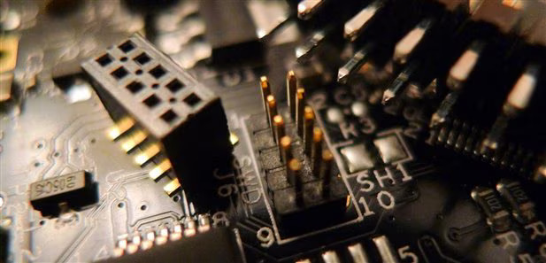

Quick Review and Getting Started with the FRDM-KL46Z

Introduction
There are several boards in the Freescale FRDM family, geared toward their Kinetis ARM processors. The nice thing is that they are extremely low cost and also integrate a few interesting Freescale sensors on each board. It really saves time if you are planning on evaluating one of the sensors but the board can be used as a general purpose microcontroller board. I think anyone considering an Arduino should also seriously consider a FRDM board and not just because they are designed with a similar footprint.
The Kinetis range includes ARM M0+ cores in the Kinetis 'L' series (other series' use different ARM cores). The diagram here (from the reference manual) shows the range offered within the ‘L’ series. It’s interesting that the possibility exists for small 16-pin devices in the future (I don't think they are available currently).

The KL46Z board contains a 256Kbyte FLASH, 32Kbyte RAM processor
The ‘mixed signal’ aspect referred to in the diagram is very interesting; it’s not just a simple ADC or DAC. The microcontroller has an on-board 16-bit ADC with some unusual capabilities not normally seem in microcontrollers; for example it offers differential inputs (ideal if there is any common noise on top of wires connecting to the sensor) and better (higher SNR) for very small signals if the sensor supplies a differential output. Interestingly a hardware trigger capability is also available to acquire the samples at an externally defined point in time. Depending on configuration, it looks like it is possible to configure the ADC to operate at very high speeds (millions of samples per sec) – although I need to study the reference guide more to confirm this; it should really be on Freescale’s product page as a competitive advantage but it isn’t. There are some other analog features (including a DAC) inside the microcontroller that would be worth investigating.
The built-in LCD controller is also great; LCD displays without controllers can be lower cost of course, and the microcontroller can drive the complex multi-level waveforms needed for multiplexed LCD displays. The display on the FRDM board is just a 4-digit model but it would be possible to drive much larger multi-character (e.g. 14-segment) LCD displays (to a total of 376 segments).
Initially Using the Board
The only thing needed is a USB cable (not supplied) to connect to the PC. As soon as that is done, the board appears as a USB drive and the PC starts to install additional drivers.
On-Board Programmer
This was not mentioned earlier because the behaviour is handily quite transparent to anyone who just wants to program and run code on the board. A good thing about all the FRDM boards is that they contain an on-board programmer (and debugger!) known as OpenSDA. It is possible to use this to program microcontrollers on other boards. Note that no cable is supplied for this and the connector is extremely tiny for a through-hole device (1.27mm pitch); a pre-built cable from other manufacturers is quite expensive so you may wish to just purchase the connector and solder some wires to it yourself. A track also needs to be cut (under holes marked J18 on the KL46Z, or J11 on the KL25Z) which can be populated with a jumper whenever it is required to revert to local programming behavior). The photo below shows the connector (Farnell part code 1022305) soldered onto a KL25Z board with a normal 0.1-inch header to the right of it for comparison. It really is a very tiny connector (in the center of the photo). The mating connector is this part and is shown on the left (I plan to just directly solder wires to it and protect with some epoxy, for a low cost adapter cable).
Conclusions
This is a superb board; the display and the fact that it is a very powerful CPU with some excellent ADC and DAC features means that I can see myself purchasing several of these for dedicated tasks; one example would be a data logger, where a built-in low-power display is very beneficial. The board has incredible value for money (list price is £9.94 ). Note that the microcontroller has many other on-chip peripherals not discussed here.
Without mbed, it would be nice to have some more hand-holding from Freescale to show users how to begin programming for it because users should not have to guess how to set up paths for installing the compiler and code, and srec should be enabled by default in the supplied project settings file. Thankfully these are easy things for Freescale to do.
Until then, the KL25Z is the best introduction to the series; if you’re purchasing these boards, you may want both or more; I have already decided to also experiment with a Kinetis ‘K’ series board too for higher performance scenarios.